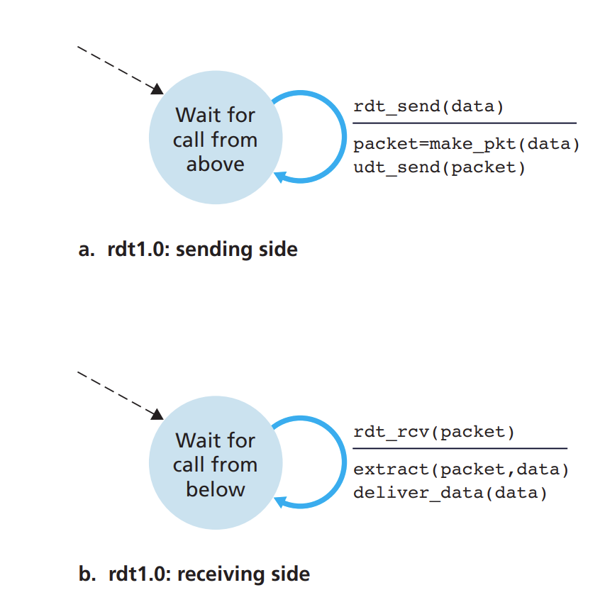
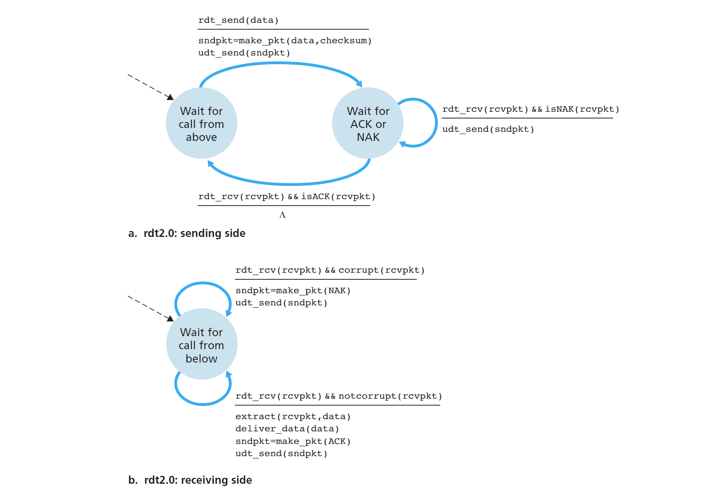
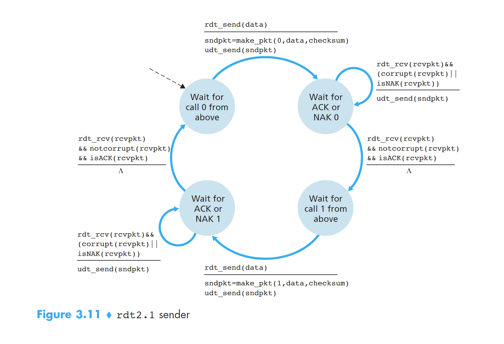
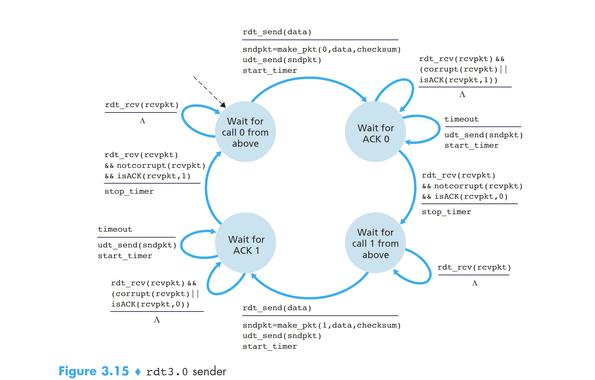
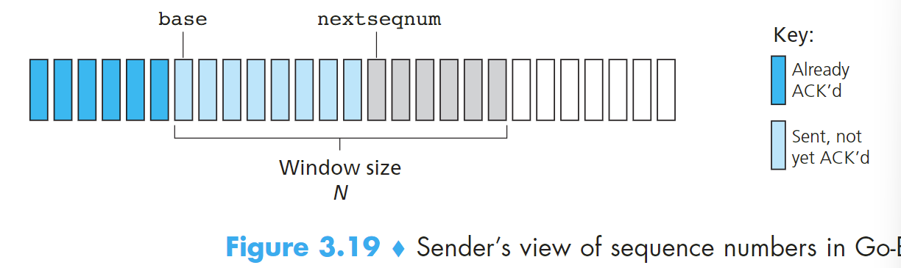
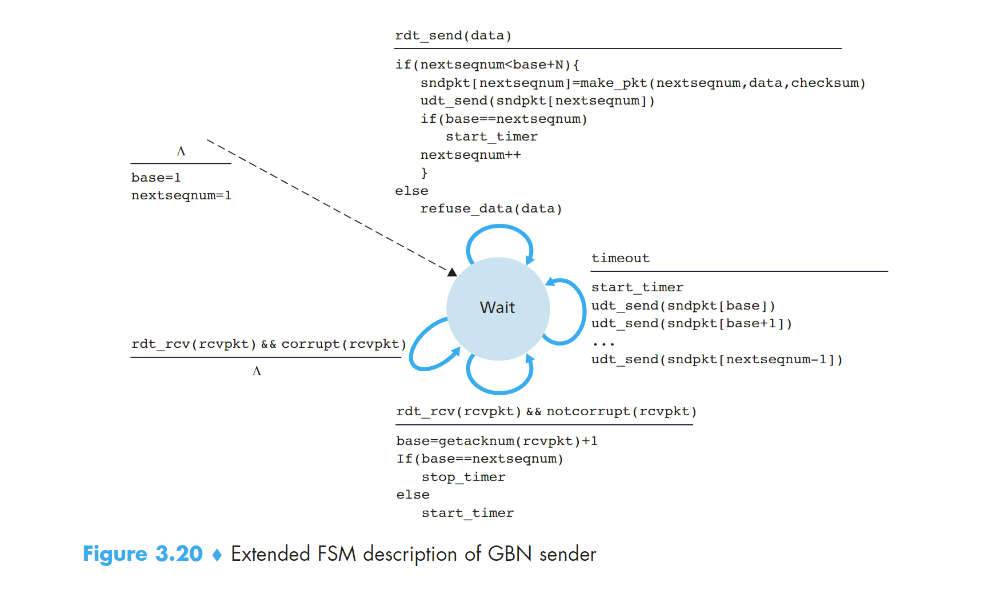
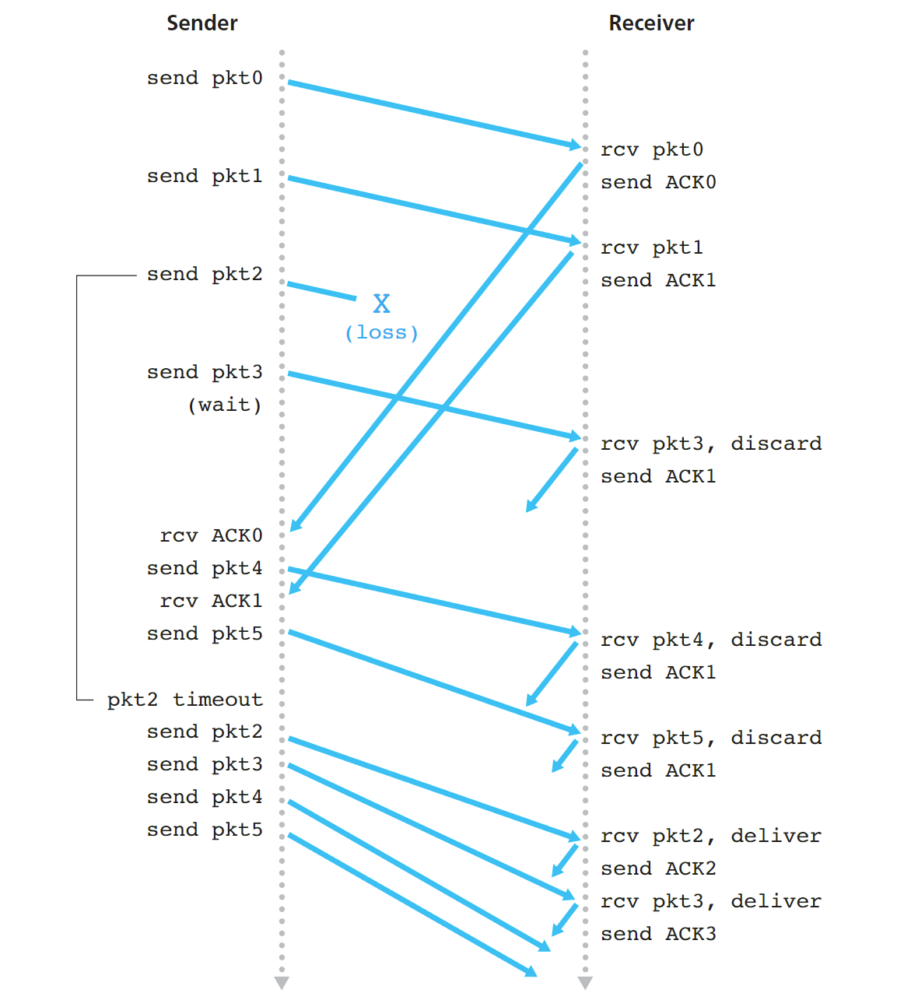
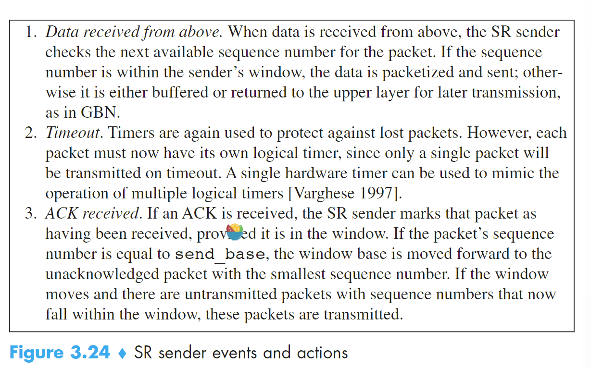
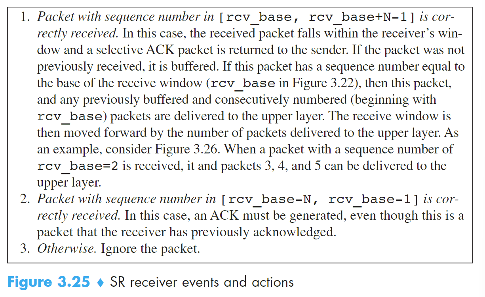

# 重点：Principles of Reliable Data Transfer
# 1 可靠数据传输服务模型搭建和服务实现
- 提供服务：主机通过应用层在某个进程发送数据到传输层，数据通过可靠的通道 channel 到达另一个主机的应用层的某个接收进程。
- 服务实现：主机发送进程调用 rdt_send () 发送数据到传输层，传输层通过可靠的数据传输协议，使用 udt_send () 发送到链路层，经过不可靠的链路传输到目标主机下的传输层然后调用 rdt_rcv () 进入传输层，最终进入应用层进程。
reliable data transfer protocol
上面提到的可靠的数据传输协议，就是实现上述的服务的过程。比如 TCP 就是一种可靠的数据传输协议。
# 2 建立一个可靠的数据传输协议
这里我们会循序渐进的介绍几种 rdt，每一种都是前一种的完善和升级。
# 2.1 rdt1.0
发送端和接送端各有一个只有一个状态的 FSM，当接收到应用层发送来的数据时，打包成 package 发送到链路层；接收端从链路层接收到 package 解包成 data 发送给上层应用层。

# 2.2 rdt2.0
rdt1.0 是建立在链路层的传输通道不会发生丢包的基础上的，这是不可能的事情，包传递的过程中发生位错误是非常常见的。
rdt2.0 是建立在发送的 package 一定会被接收到但是允许发生 bit 错误。
- positive acknowledgements：确认收到消息
- negative acknowledgements：未收到请求重发消息
使用这两个信息可以使得 sender 针对这两个情况进行不同的动作，这是 rdt2.0 中非常重要的基础。这种可能重传的机制被称为 ARQ
ARQ 协议需要三个额外的协议来处理位错误的问题：
- Error detection 错误检测
- Receiver feedback 接收端反馈
- Retransmission 重传
接下来正式介绍 rdt2.0，首先来看他的 FSM，与 rdt1.0 不同的是，rdt2.0 的 sender side 的 FSM 有两个状态，receiver side 的 FSM 只有一个状态
先看 sender side：两个状态分别为 wait for call from above（1） 和 wait for ack or nak（2）。当处于 1 状态时，当 rdt_send (data) 消息到来时，执行 sndpkt = make_pkg(data, checksum); udt_send(sndpkt); 进入状态 2；当处于状态 2 时，如果收到 rdt_rcv (rcvpkt) && isNAK (rcvpkt), 执行 udt_send(sndpkt) 重新发包；如果收到 rdt_rcv (rcvpkt) && isACK (rcvpkt), 进入状态（1）
再看 receiver side：检查到包损坏，发送 NAK；检查到包完好，发送 ACK 并把 package 解包的 data 发送到应用层。

看上去没什么问题，但实际上有个致命的错误！我们无法保证 ACK 或者 NAK 的位上没有发生损坏。所以我们仍然需要在包含 ACK 后 NAK 的包上添加 checksum。如果确认损坏，我们又该如何处理这种情况呢？
解决方法：
在 data package 中添加 sequence number 序列号，这样 receiver 就可以知道接收的包是不是重发的。
举个例子：stop-and-wait protocol，接收的 package 的 sn 之前遇到过则是重发的，不一样或者增加则是新发的
应用这个解决方法，rdt2.1 产生了，能够很好的解决 ACKNAK 消息丢失的问题。
# 2.2.1 rdt2.1
sender side：

初始状态是 wait for call 0 from above，接收到上层发来的 data，和 0（sn）、checksum 一起打包发送给链路层，进入状态 wait for ACK or NAK 0。
如果接收到反馈的 package，查看发生了损坏或者是 NAK package 重发包；如果没有发生损坏或者是 ACK 进入下一个状态：wait for call 1 from above。
接收到上层发来的 data，和 1（sn）、checksum 一起打包发送给链路层，进入状态 wait for ACK or NAK 1。
如果接收到反馈的 package，查看发生了损坏或者是 NAK package 重发包；如果没有发生损坏或者是 ACK 进入下一个状态：wait for call 0 from above。完成闭环。
这个 FSM 用到的 sn 码只有 0 和 1。
receiver side：

只有两个状态。
初始状态是 wait for 0 from below，接收到链路层发来的包，检查包没有发生错误并且 sn 是 0，解压包把 data 向上层传递。把 ACK 消息和 checksum 打包发送给 sender side，进入下一个状态 wait for 1 from below；
如果接收到链路层发来的包，检查包发生错误，则把 NAK 和 checksum 打包发送给 receiver side； 如果接收到链路层发来的包，检查包没错误但是是序号为 1 的包，把 ACK 和 checksum 打包发送给 sender side。状态没有发生变化；
状态是 wait for 1 from below 时，处理流程和上面是完全对称的。
# 2.2.2 rdt2.2
rdt2.2，与 rdt2.1 不同的是：接收端必须包括被 ACK 消息确认的 packet 的 sequence number，sender 必须检查被接收的 ACK 消息确认的 package 的 sn。也就是说接收端返回的 ACK 和 NAK 消息也带有 sn 序列号，只有符合当前状态的 sn 才可以做出 rdt2.1 的反应。也就是处于状态 1 时收到序号为 0 的包会发送 ACK 但不会把 data 接收而是丢弃了


# 2.3 rdt3.0
现在要开始考虑链路层的传输会有丢包的情况，这是最可能发生的事情，所以现在的应用大多是 rdt3.0 的协议。
伴随着这个问题产生的还有两个顾虑：如何检测丢包以及当丢包时需要做出的反应
我们会把检测丢包和恢复重发的任务放在 sender side
那么如何检测丢包呢？sender side 在一段固定的时间内没有收到发送的 package 的 ACK，就可以认为这个包丢失了，开始重传。如果发送的 package 没有丢失，只是在链路层中遭遇了拥塞导致延迟时间超过设定的 timeout，也会触发重发，这样就会导致 duplicate data packets。幸运的是，可以采用 rdt2.2 的序号机制来无视多余的重发包。
具体流程可以看 FSM

# 3 Pipelined Reliable Data Transfer Protocols
stop-and-wait 类型的协议性能无法满足需求，使用流水线 rdt 协议能提高性能。
流水线模式 sender 和 receiver 都可以发送多个 packet，不需要等待 ACK。为了实现这样的特性采用流水线技术。
实现方法：
- sequence number 的范围可以增长，且每一个在传输的 packet 都有一个独特的 sn。
- sender 和 receiver 设立 buffer 用来发送或者接收多个包。sender 必须设立 buffer 来缓存没有 ACK 的包用来重发。receiver 也需要为接收的 packet 设立 buffer 来缓存
# 4 Go-Back-N GBN
首先确定一点，GBN 协议是一个流水线 RDT 协议。但是，GBN 协议中 sender 会限制 buffer 中未 ACK 的 packet 的数量为 N。

sn 的范围分为三部分。一是已经发送且 ACK 的 sn [0~base-1]，二是已经发送但是没有 ACK 的 sn [ base~nextseqnum-1]，第三是未发送的待分配的 sn [ nextseqnum~n-1]。第二和第三部分之和为 N。
N 也被称为 window size；GBN 也被称为 sliding-window protocol。window size 是可以变化的，比如在 tcp 协议中，发生 congest 时会减小。sn 码在实际操作中是被封装在 section 中的，有位数限制。k 位的 sn 码最大为 2 的 k 次方 - 1。tcp 的 sn 码一共 32bits
GBN 协议的 FSM 表示如下：

sender 在 timeout 后，会从 base 开始重新一轮发包；如果某个 ACK 没收到，那么后面收到的 ACK 是不会更新 base 的，所以就会导致发了很多冗余的 packet。这是个问题。


# 4 Selective Repeat SR
GBN 协议也是存在缺陷的，一个 GBN 协议包的出错或导致大量的包重发活动。SR 协议能够避免不必要的包重发通过让 sender 只重发那些被发送端认为是出错的丢包的 packet。
为解决这个问题，SR 升级了 sn 码的属性，在【base~nextseqnum 中允许存在 ack 的 sn 并且做上标记】。SR 的 receiver 会承认 out-order 的 packet 并且发送 ACK，sender 也会接收这些 ACK。但是 receiver 的 buffer 仍然会保留这些被接受的 packet 直到比他的 sn 小的 miss 的 packet 都被接收到才不保留。

rcv_base 取决于期望接收到的 packet 的 sn，也就是被接受且发送 ack 的下一个 sn


SR 和 GNB 的不同在于，所有的接收到 packet 都会被打上 ack，base 会跳跃到最小的未被接收到的 sn 上，可能一跳一大段！但是 GBN 就不行，他没有处理 out-order 的 packet 所以一旦丢包 base 就会卡住，并且 timeout 后又从 base 开始发包一步一步的递增。SR 的 base 是具有跳跃性的！
# 4.2 TODO：SR 的 lack
# TCP 传输协议
# TCP socket
TCP socket 表示使用四元组:
# TCP Connection
- connect-oriented：面向连接，相互发送预备报文段，以确保数据传输的参数。
- full-duplex service：全双工服务，如果一台主机上的进程 A 与另一台主机上的进程 B 存在一条 TCP 连接，那么应用层的数据就可以在进程 B 流向进程 A 的同时，也从进程 A 流向进程 B；
- point-to-point：单个接收方之间的链接
- three-way handshake：三次握手，客户端先发送一个特殊的 TCP 报文，服务器用另一个特殊的报文来响应，最后客户再用第三个特殊报文来作为响应。
客户进程通过使用 socket 套接字来将要发送的数据写入 send buffer，os 会把 send buffer 里的数据包装成 ip datagram，在由链路层打包成 frame 发送出去，目标服务器接受到后逐层拆解后把数据写入 TCP receive buffer ，再由 Socket 来读取数据。
TCP 可以从 buffer 中取出放入的 segment 中的数据最大的数量限制于 MSS（最大报文段长度）, 而 MSS 则由 MTU（链路层的最大传输单元）决定。
# TCP segment structure 报文段结构
重点结构成员：
- Sequence Number：32bit 的序号字段
- Acknowledge Number：32bit 的确认号字段
- Receive Windows：16bit 的接受窗字段，用于控制流量
- Header Length: 4bit 的 header 长度字段，用于指示以 32bit 为单位的 TCP 的头部的长度。
- Option: 动态调节
- 6bit 的标志字段（flag field）：
- ACK：确认字段中的值是否有效；
- RST、SYN、FIN：用于连接建立和拆除；
- CWR、ECE：在明确拥塞通过中使用
- PSH：被置位时，指示接收方立即将数据交给上层；
- URG：指示 segment 中存放着被发送端上层实体设置为 “紧急” 的数据；
- Urgent Data Point: 16bit 的紧急数据指针字段，指出紧急数据的最后一个字节；
# segment number and acknowledgement number
报文段的序号是该报文段首字节（data）的字节流编号，而不是建立在传送的报文段的序列上。
什么是字节流编号呢？
假设现在 A 主机要发送一串 50000 字节的 data 到 B 主机，但是 MSS 为 1000 字节，所以这个数据就需要拆解为 50 个 size 为 1000 字节的 segment 来多次发送，这 50000 字节流会被编号，0~49999，所以第一个 segment 的第一个字节的字节流编号就是 0，第二个 segment 的第一个字节流编号就是 1000，依次类推。
主机 A 填充进报文段的确认号是主机 A 希望从主机 B 接收到的下一个字节的字节流序号！
由于网络中 TCP 的传输是不确定的，所以被拆分成多个 TCP 的数据不可能按原先的顺序被接收方接收，所以需要 segment number 在确定子数据包的顺序。
但是光有 segment number 是不够的， 因为在网络中不仅有发送方，还有接收方也会发送，TCP 是全双工的。所以需要确认号。这样就能保证双方接收的 data 都能按照正常的顺序进行排列
# 必考重点：RDT 可靠的数据传输
先来看一段 TCP 发送的代码
1
2
3
4
5
6
7
8
9
10
11
12
13
14
15
16
17
18
19
20
21
22
23
24
25
26
27
28
29
30/* Assume sender is not constrained by TCP flow or congestion control, that data from above is less than MSS in size, and that data transfer is in one direction only. */
NextSeqNum=InitialSeqNumber
SendBase=InitialSeqNumber
loop (forever) {
switch(event)
event: data received from application above
create TCP segment with sequence number NextSeqNum
if (timer currently not running)
start timer
pass segment to IP
NextSeqNum=NextSeqNum+length(data)
break;
event: timer timeout
retransmit not-yet-acknowledged segment with smallest sequence number
start timer
break;
event: ACK received, with ACK field value of y
if (y > SendBase) {
SendBase=y
if (there are currently any not-yet-acknowledged segments)
start timer
}
break;
} /* end of loop forever */
设置一个循环监听事件
- 当从上层应用接收到数据时：
- 创建一个 TCP 数据段，序列号为 NextSeqNum。
- 如果定时器未启动，则启动定时器。
- 将数据段传递给 IP 层进行发送。
- 更新 NextSeqNum 为 NextSeqNum + length (data)，表示下一个将要发送的数据段的序列号。
- 当定时器超时时：
- 重传尚未确认的最小序列号的数据段（最早发送但未被确认的数据段）。
- 重启定时器。
- 当接收到 ACK 时：
- 检查 ACK 字段的值 y 是否大于 SendBase。
- 如果 y 大于 SendBase，则更新 SendBase 为 y，表示所有序列号小于 y 的数据段都已经被确认。
- 如果仍然有未被确认的数据段，则重启定时器。
超时间隔加倍
当发生超时事件时，TCP 重传时都会将下一次的超时间隔设为先前值的两倍；当发生其他两个事件计时器重启时，TimeoutInterval 由最近的 EstimatedRTT 值与 DevRTT 值推算得到。这种修改提供了一个形式受限的拥塞控制。
快速重传
duplicate ACK：对一个已经发送过的 segment 进行再次的确认，重发一次 ack
当比期望 segment number 的失序报文段（就是发送的 segment number 和上一个 ACK 不一致）到达时，接收方立刻发送冗余 ACK（duplicate ACK），指示下一个期望字节的序号。如果 TCP 发送方接收到对相同数据的三个 duplicate ACK TCP 就执行快速重传，即在报文段的定时器过期之前重传丢失的报文段，
选择确认 selective acknowledgement
接收端非常容易接收到 out-of-order 的 segments，那还能用当前接收到的最小 ack 作为 sendbase 吗
所以就需要选择确认：允许 TCP 接收端有选择的确认那些失序的报文段而不是收到什么确认什么，不是积累地确认最后一个正确接收的有序报文。
如何确定当前主机应该发送的 ACK 的值？
有以下几个原则：
- 累积原则：ACK 如果为 n，则表示主机确认接收到 0~n-1 的序号的 segment，所以 ACK 可以是最小的未确认 segment 序号；
- 期望下一个发送：ACK 被主机视为希望下一个发送的 segment，在一些简单的 TCP 发送程序，ACK 赋值给 sendBase，用来确定每次定时器到期时第一个发送的 segment；
- 丢包和延迟：仍然发送上一个 ACK，被称为 duplicate ACK，发送超过三次触发快速重传。
# 流量控制 Flow Control
发送端需要维护一个 receive window 来控制流量。receive window 用于给发送者一个指示，该接收方还有多少可用的缓存空间。因为 TCP 是全双工通信（发送端同时也是接收端，接收端同时也是发送端），所以 link 两端的 sender 都需要维护一个 receive window。
RcvBuffer：接收缓存的总大小
rwnd：可用的接收缓存的大小
# TCP Connect Management
# 三次握手连接 three-way handshake

# 四次握手关闭 four-way handshake

# TCP State
客户端 TCP 经典状态
客户端应用初始化一个 TCP 连接，发动 SYN
- SYN_SENT： Receive SYN & ACK，send ACK
- ESTABLISHED：Send FIN
Client application initiates close connect - FIN_WAIT_1：Receive ACK， send nothing
- FIN_WAIT_2：Receive FIN，send ACK
- TIME_WAIT：wait 30 seconds
- CLOSED
服务端经典状态
Server application creates a listen socket
- LiSTEN: Receive SYN, send SYN & ACK
- SYN_RCVD: Receive ACK, send nothing
- ESTABLISHED: Receive FIN, send ACK
- CLOSE_WAIT: Send FIN
- LAST_ACK: Receive ACK, send nothing
- CLOSED
# 多路复用与多路分解（Multiplexing and Demultiplexing）
运输层的多路复用与多路分解，就是多主机上的进程之间（A 主机的进程 1 与 B 主机的进程 2）的运输服务。一个进程有一个或多个套接字（socket），它相当于从网络向进程传递数据和从进程向网络传递数据的门户。
- Multiplexing：在源主机从不同 socket 中收集 data blocks，并为每个 data block 封装首部信息（header）从而生成 segment，然后把 segment 传递到网络层；
- Demultiplexing：在接收端，运输层会检查这些字段，标识处接收 socket，进而将 segment 定向到该 socket，即把运输层 segment 的 data 交付给正确的 socket（进程与网络的门户，也就是设备的端口）
multiplexing 要求：
- socket 有唯一的标识符
- segment 的 header 中有用来指示交付给的 socket 的特殊字段
这些特殊字段就是源端口号字段和目的端口号字段
# 必考重点：TCP 的拥塞控制 Principles of Congestion Control
# 拥塞原因和代价
- 当分组的到达速率接近链路容量时，分组经历巨大的排队时延；
- 发送方在遇到大时延时所进行的不必要重传会引起路由器利用其链路带宽来转发不必要的分组副本；
- 当一个分组沿一条路径被丢弃时，每个上游路由器用于转发该分组到丢弃该分组而使用的传输容量最终被浪费掉；
# 拥塞控制方法
- end-to-end congestion control
TCP segment 丢失意味着 网络拥塞，TCP 会减低窗口大小（cwnd、rwnd）。
- network-assisted congestion control
网络层中的路由器会返回关于链路是否发生 congest 的信息给主机。下面会详细介绍一个网络辅助拥塞控制算法的应用。
# 重点来叻：TCP 拥塞控制 Congestion Control
运行在发送方的 TCP 拥塞控制机制跟踪一个额外的变量，即 congestion window（cwnd）。它规定了一个 TCP 发送方能向网络中发送流量的最大速率，用来限制主机发送流量，如果主机知道自己和目的地之间存在 congest，会降低发送的 rate
发送方未确认的数据量不会超过 cwnd 和 rwnd 的最小值。
cwnd 是动态变化的。
- 一个丢失的报文段表意味着拥塞，因此当丢失报文段时应当降低 TCP 发送方的速率；
- 一个确认报文段指示该网络正在向接收方交付发送方的报文段，因此，当对先前未确认报文段的确认到达时，能够增加发送方的速率；
# TCP 拥塞控制算法
算法包括三个部分：slow-start、congestion avoidance、fast recovery
- slow-start：
在慢启动状态下，cwnd 的值以 1 个 MSS 开始并且每当传输的 segment 首次被确认就增加 1 个 MSS。 - 如果存在一个由超时指示的丢包事件，TCP 发送方将 cwnd 设置为 1 并重新开始慢启动过程。它还将第二状态变量 ssthresh（慢启动阈值）设置为 cwnd/2
- 一旦进入拥塞避免状态，cwnd 的值大约是上次遇到拥塞时的值的一半，即距离拥塞可能并不遥远；在任意状态冗余 ACK 达到 3 个就会进入快速恢复状态的缺失报文段。